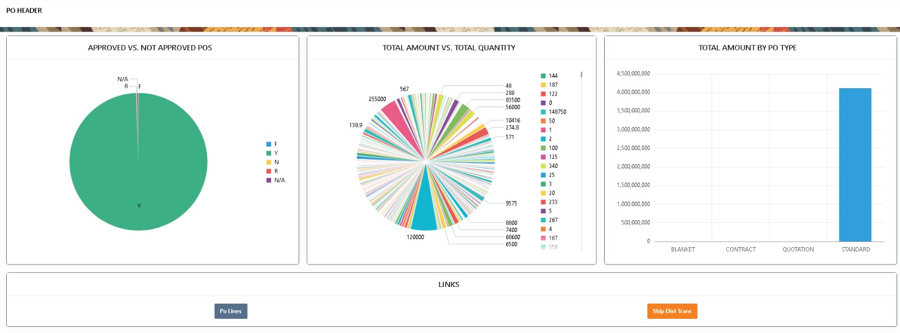
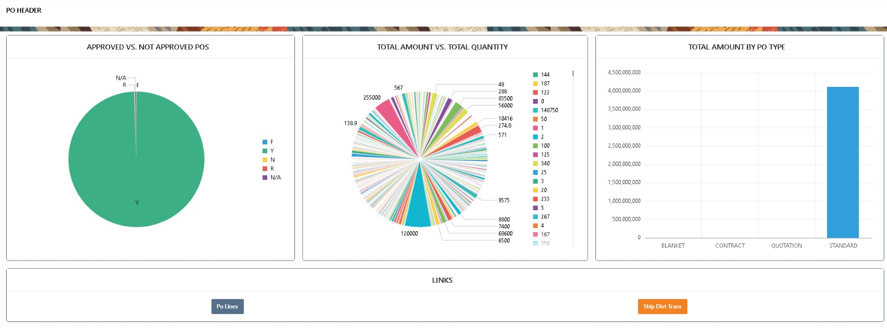

PO Header Dashboard
The PO Header dashboard is a cornerstone of our Oracle APEX reporting solution. It empowers businesses to gain **full visibility into their procurement cycle**, from purchase order approvals, supplier performance, and spending trends to payment details and operating unit breakdowns.
Our solution transformed raw Oracle EBS data into **interactive, dynamic dashboards** that provide decision-makers with **real-time insights**, helping organizations reduce costs, negotiate better with vendors, and achieve complete transparency in their financial and supply chain operations.
 

With these dashboards, our clients gained the ability to track **procurement efficiency**, monitor **approval bottlenecks**, and measure **spending by supplier and currency**. By leveraging Oracle APEX, we delivered a **low-cost, high-impact reporting system** that scales easily across departments and operating units.